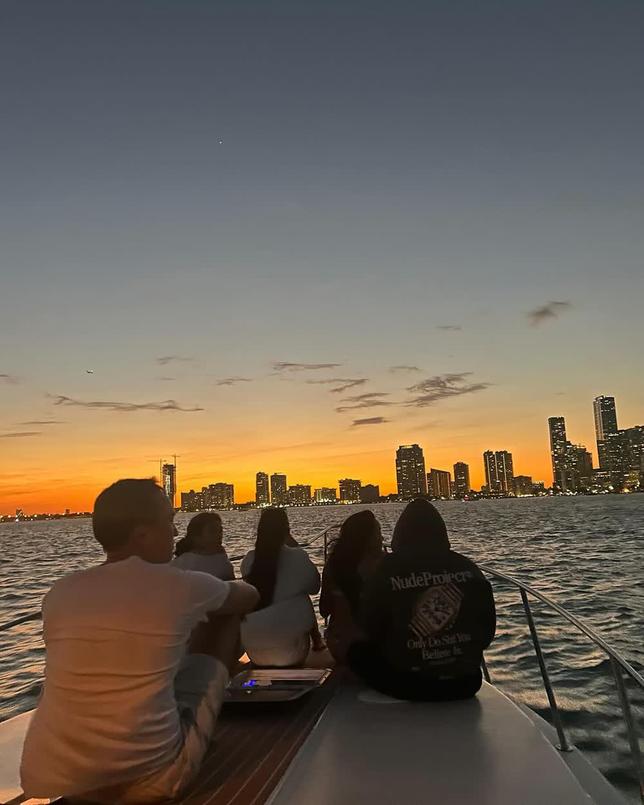
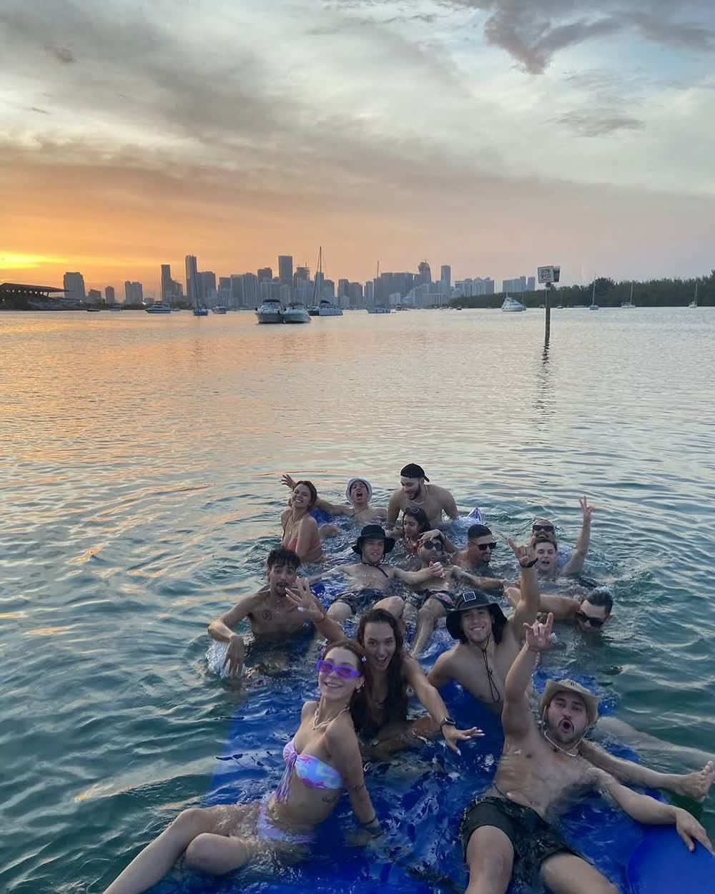
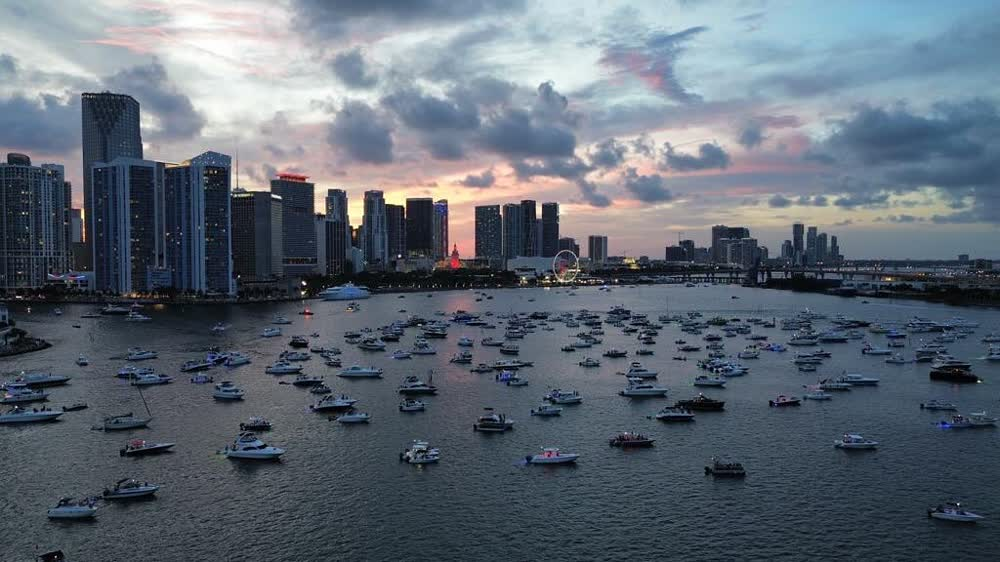

Miami's good hour lasts about forty minutes
It reads better from the water than from any rooftop in the city, and it is the one charter people book twice.

We time it backwards, not forwards
Sunset in Miami moves from about 5:30 in December to past 8:15 in June. A charter booked as "early evening" misses it half the year, so we don't book it that way — we take the sunset time for your date and work backwards to a dock time.
That usually means leaving between ninety minutes and two hours before. It gives you the run out, somewhere to sit while the light drops, and the return with the city already lit, which is the half most people forget to expect.

Where we watch it from
There is no single best spot; it depends on the wind. On a calm evening we'll sit out where the water is open and the whole western sky is uninterrupted. When it's blowing, we tuck in behind an island and you get the same sky with none of the chop.
The captain calls that on the day. It's the part of this you're actually paying for.

It's the proposal charter too
More of these end in a proposal than any other trip we run. If that's the plan, say so quietly when you book and we'll handle it: no announcement, no crew hovering, engine off at the moment you want it off.
We'll also take the photographs if you want them, or stay completely out of the frame if you don't. Both are fine — just tell us which.
The same kit on all three boats
Captain and fuel
Both in the price. You never rent a hull and sort the rest out yourself.
Cooler on ice
Ice and drinking water aboard, with room for whatever you bring.
Floating pool
Goes in the water as soon as we anchor, on all three boats.
Life jackets, every size
Child sizes carried as standard. You never have to ask or bring your own.
Your playlist
Bluetooth speaker aboard. You pick the music and you pick where we stop.
Your own food and cake
Bring the food, the drinks and the balloons. We keep the cake cold until you ask.
Sunset cruise questions
What time does a sunset cruise leave?
It depends entirely on the date. Sunset in Miami runs from around 5:30pm in December to past 8:15pm in June, and we set the dock time from the actual sunset for your day — usually ninety minutes to two hours before it.
How long is a sunset charter?
Most are four hours, which gives you the run out, the sunset itself, and the return with the skyline lit. If you only want the sunset, a shorter trip works, but the return leg is the part people remember.
What happens if it's cloudy?
We still go — an overcast evening on the bay is often better than a clear one, and the city lights don't care about the sky. If the captain cancels for actual weather, you reschedule at no cost or get the deposit back.
Can we bring drinks and food?
Yes. Cooler on ice, water and a speaker are already on board. Sunset charters are the ones where people bring a bottle and something to eat rather than a full spread.
Pick a date and we'll work backwards from the sun
Sunset moves by more than an hour across the year. Tell us the day and we'll tell you what time to be at the dock.
Other celebrations
Bachelorette boat party
Up to 13, the whole day photographed, and the bride organising nothing.
Birthday boat rental
Cake kept cold, your playlist, and the engine cut with downtown behind you.
Sandbar day
Waist-deep water, white sand under it, and the floating pool in.
Family boat day
Shade all day, child-size life jackets as standard, and nobody in a hurry.
Skyline & photos
Star Island, the big houses, and the hour the light lands on the city.
Corporate days at sea
Up to 13, booked with the captain, invoiced properly, no event agency in the middle.
Large groups
Too many people for one boat? All three go out together and raft up at the sandbar.
Romantic evenings at sea
The whole boat for two, the cockpit table, and a captain who stays out of the photographs.
Ash scattering at sea
A private boat past the three-mile line, and as long as you need once the engine is off.